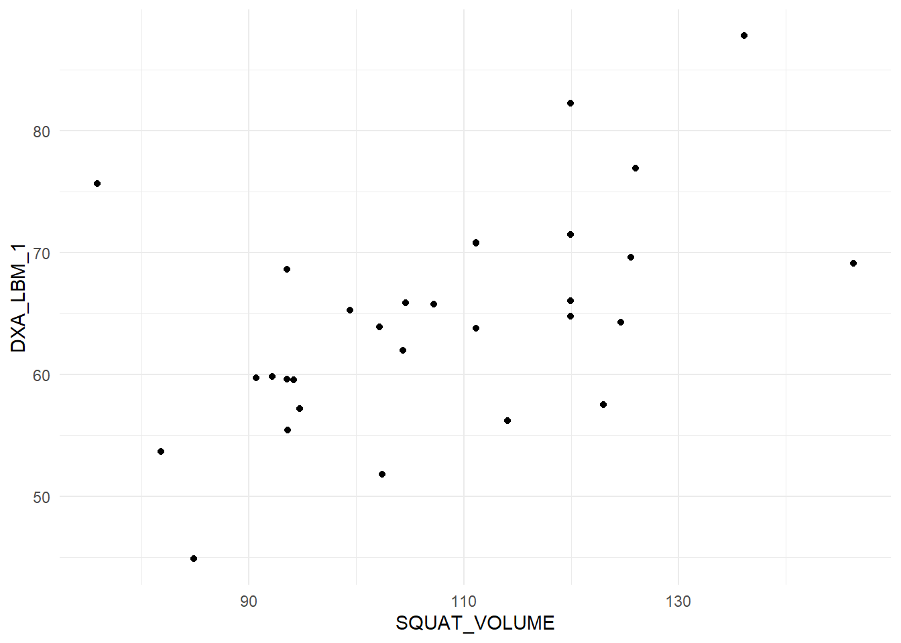

We are already familiar with the regression model. We will now take a step back, to the correlation. A correlation is a unit-less measure of the relationship between two variables. The strength of the relationship is expressed between -1 and 1 where values closer to 0 means weaker relationship.
Using the data set provided by Haun et al. 2019 we will see how the correlation works. First we will load the data and select the variables SQUAT_VOLUME and DXA_LBM_1. A reasonable interpretation of these variables are that SQUAT_VOLUME is the pre-intervention training volume and DXA_LBM_1 is the percentage lean body mass before the intervention. To make the data more readable we will scale the squat volume from kg to tons
dat <- read_csv("./data/hypertrophy.csv") %>%
select(SUB_ID, SQUAT_VOLUME, DXA_LBM_1) %>%
mutate(SQUAT_VOLUME = SQUAT_VOLUME/1000) %>%
print()A basic question given these kind of data is, do participants with more previous training volume have more relative muscle mass (% lean mass)? We can test this by the doing a correlation analysis. The cor function gives the correlation coefficient from two variables:
cor(dat$SQUAT_VOLUME, dat$DXA_LBM_1)The value seems quite high, just above 0.5. Remember that a perfect correlation is either 1 or -1 and no correlation is 0. The correlation coefficient is not sensitive to the order of variables:
cor(dat$DXA_LBM_1, dat$SQUAT_VOLUME)We can use the correlation coefficients to draw inference. A test against the \(H_0: r=0\) (the null hypothesis that there is no correlation) can be done in R using the cor.test function.
cor.test(dat$DXA_LBM_1, dat$SQUAT_VOLUME)From this function we get a confidence interval, does the confidence interval contain the \(H_0\)?
When doing a correlation analysis you are at risk of drawing conclusions based on wonky data. A single data point can for example create a correlation in a small data set. Lets look at the data we are using now.
dat %>%
ggplot(aes(SQUAT_VOLUME, DXA_LBM_1)) + geom_point() + theme_minimal()
The plot displays a quite reasonable relationship, there are no outliers, both variables are evenly distributed (normally distributed). These are assumptions regarding the correlation analysis. Other assumptions are that the relationship is linear (a straight line).
All good! We have a test that tells us about the relationship between two variables. However, the test does not tell us more about the correlation. Moving to a regression analysis gives us more information.
First some similarities. Notice that the p-value for the regression coefficient for squat volume is (almost) precisely the same as the p-value for the correlation analysis!
# Store the correlation analysis in an object
c <- cor.test(dat$DXA_LBM_1, dat$SQUAT_VOLUME)
# store the regression model
rm <- lm(DXA_LBM_1 ~ SQUAT_VOLUME, data = dat)
# Display the p-value for the regression coefficient
coef(summary(rm))[2, 4]
# Display the p-value for the correlation coefficient
c$p.valueAlso notice that the \(R^2\) value in the regression model is the same as the squared correlation coefficient. Remember that the \(R^2\) in the regression model is the degree to which the model account for the data (Navarro 2020), also see here.
summary(m)$r.squared
c$estimate^2These similarities comes from the fact that they are the same analysis. The degree to which the two variables co-varies.
The additional benefit of using a regression analysis comes from the interpretation of the regression coefficient estimates. In our example we can see that the increasing the weekly volume with one ton increases percentage lean mass by 0.283%-points. The confidence interval is given on the same scale and can be retrieved by using the code below:
confint(rm)This shows that the true value could be as low as 0.104 and as high as 0.463.
If you look at the help pages for cor (?cor) you will see that you may specify the type of correlation used for analysis. Commonly used are Pearsons (default) and Spearmans correlation coefficient. The difference between these two is that the Spearmans correlation coefficient does not assume normally distributed data. This is basically a correlation of ranks. The highest number i a series of numbers will have the highest rank and the smallest will be given the lowest ( = 1).
We can prove this! The rank function gives a ranking to each number. We first plot the data as continuous values and then as ranks:
dat %>%
ggplot(aes(SQUAT_VOLUME,DXA_LBM_1)) + geom_point() + theme_minimal()
dat %>%
ggplot(aes(rank(SQUAT_VOLUME),
rank(DXA_LBM_1))) + geom_point() + theme_minimal()We can see in the plot that the relationship persist after rank transformation.
To use the spearman correlation coefficient we specify "spearman" in the cor.test function.
cor.test(dat$SQUAT_VOLUME, dat$DXA_LBM_1, method = "spearman")To see that this is similar to using Pearsons correlation coefficient with ranked data, we do just that!
cor.test(rank(dat$SQUAT_VOLUME), rank(dat$DXA_LBM_1), method = "pearson")Success! Another statistical mystery unlocked!
In this case the interpretation of tests using ranked data and un-transformed data are very similar. When do we use the rank based correlation? In cases when assumptions are not met a rank based correlation will protect us from making bad decisions when for example a single data point “drives” a correlation. The the rank-based correlation (Spearmans) will be more conservative.
The correlation coefficient has many similarities with a univariate regression model. Correlations measures strength of association, but the regression model comes with benefits in terms of interpretation. The correlation only takes two variables but we can extend the regression model. When we think that data do not match our assumptions we can do correlation analysis using Spearmans rank correlation.
Navarro, D. 2020. Learning Statistics with R.